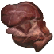

Печень чудовища
Предметы / Обмен
Открыть в интерактивной вики →
| Вес | 20 |
|---|---|
| Цена | 0 |
Описание

Рецепт
Обмен
Дроп


Применение
|
Как добыть
| Получаем за победу над: |

Открыть в интерактивной вики →
| Вес | 20 |
|---|---|
| Цена | 0 |
|
| Получаем за победу над: |